AI: Search Methods for Problem Solving — Quiz 2 · 2026 · Term 2
13 questions · 25 marks · IIT Madras BS Data Science · course code CS3003
Comprehension · Q1–Q3
DATAShared data for Q1–Q3
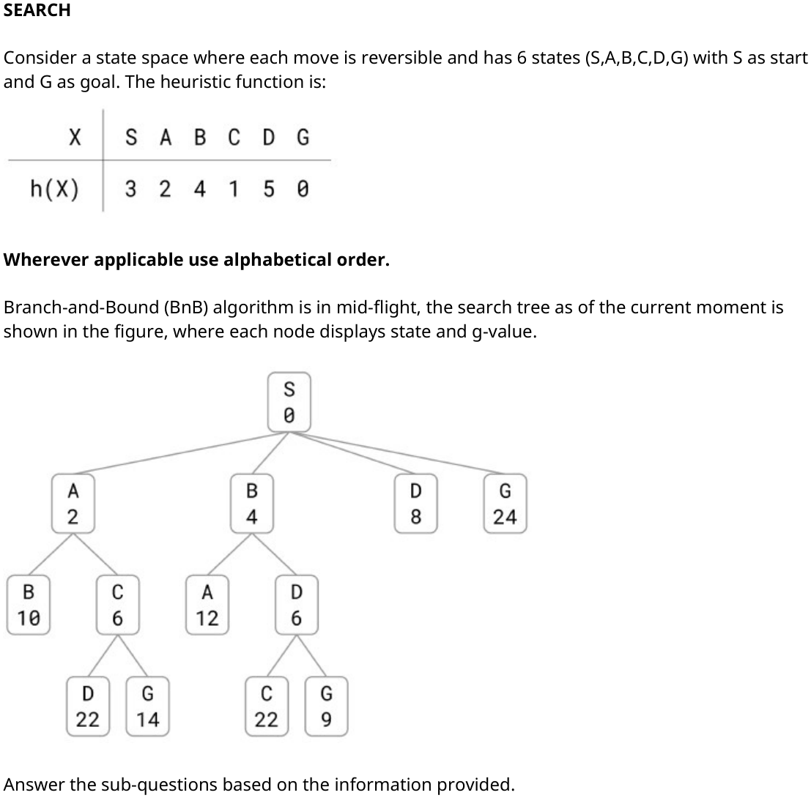
SAQ12 marks
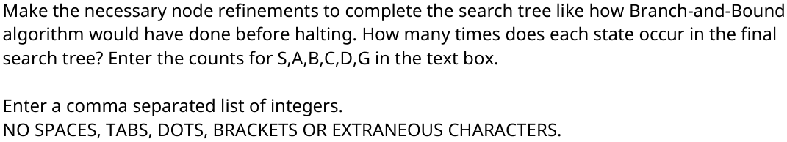
Answer: 1,2,2,3,3,4
SAQ22 marks
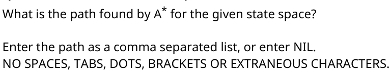
Answer: S,B,D,G
SAQ32 marks
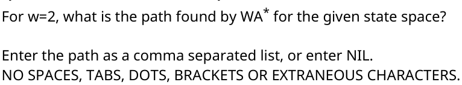
Answer: S,A,C,G
Comprehension · Q4–Q7
DATAShared data for Q4–Q7
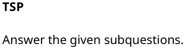
SAQ41 mark
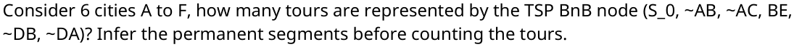
Answer: 1
MCQQ52 marks
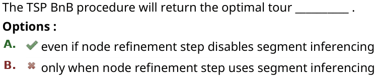
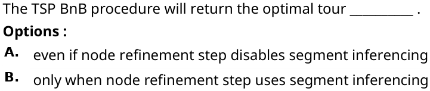
Answer: A
SAQ62 marks
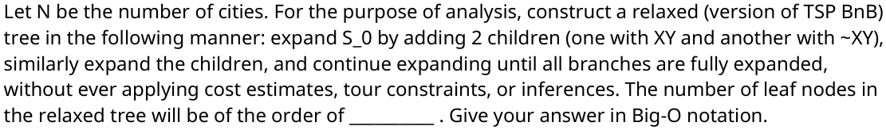
Answer: O(2^(N^2)) (also accepted: O(2^(N*N)))
SAQ72 marks
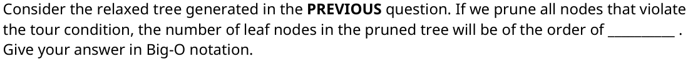
Answer: O(N!)
Comprehension · Q8–Q10
DATAShared data for Q8–Q10

SAQ82 marks
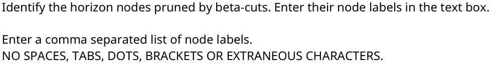
Answer: G,H
SAQ92 marks
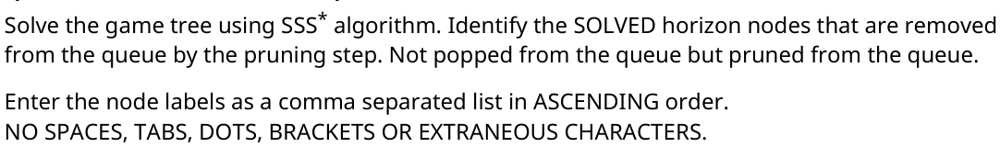
Answer: C,I,K
SAQ102 marks
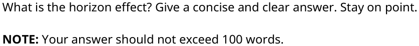
Answer: descriptive — no auto-graded key (see guide)
Comprehension · Q11–Q13
DATAShared data for Q11–Q13
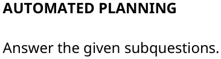
MCQQ112 marks
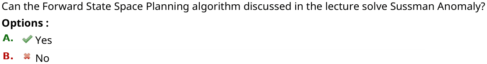
Answer: A
MCQQ122 marks
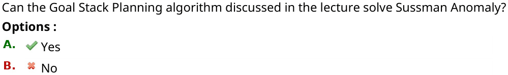
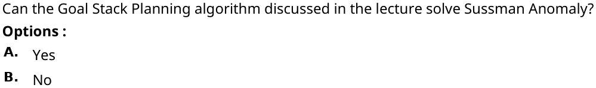
Answer: A
MSQQ132 marks
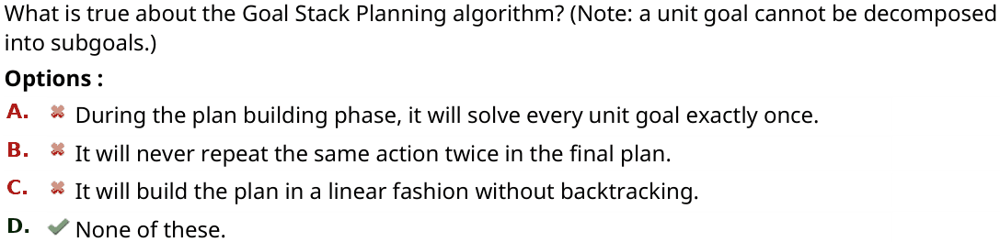
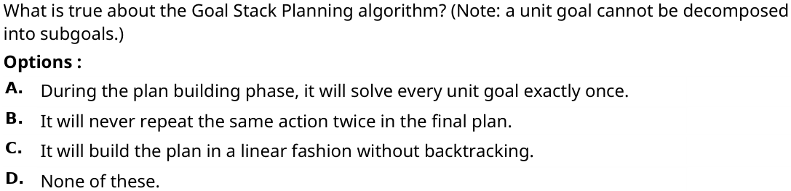
Answer: D
Questions are cropped directly from the original exam PDF, so equations, figures and the official answer marks are exactly as published.